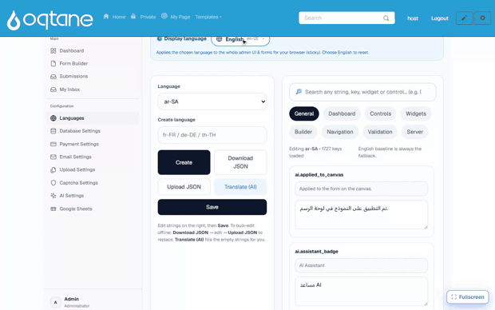

Multi-language (built-in)
MegaForm is multilingual out of the box, on two independent layers:
- Your forms — one form can carry translations for its title, description, field labels, help texts, placeholders, and option lists. Visitors see the form in their language and can switch languages right on the page.
- The product UI — the Form Builder, dashboards, and admin screens themselves can be displayed in the administrator's preferred language.
No extra module or third-party service is required for either layer.
Translated forms
How visitors experience it
When a form declares more than one supported language, the rendered page shows a small
🌐 language strip above the form. Clicking a language reloads the form with every
translated text — title, labels, help, placeholders, options — in that language. The choice is
carried in the URL (?locale=fr-FR), so a link can point straight to a specific language
version of the form.
Texts that have no translation for the selected language fall back to the form's default language, so a partially translated form still renders completely. The selected language is also applied to the built-in chrome (buttons, validation messages) from the shared language catalog described below.
How authors add translations
Translations live inside the form itself (the template JSON carries a translations map per
locale, at form level and per field — see the
Template JSON Reference). In practice you fill them in one of these
ways:
- Ask the AI assistant — "translate this form to French and German" — and review the result before applying, like any other AI Form Designer change.
- Edit the template JSON directly for full control, or import/export forms with their translations included — translations travel with the form.
Then list the languages the form should offer in the form's settings
(supportedLanguages, e.g. ["en-US", "fr-FR", "de-DE"]) and pick its defaultLanguage.
The admin UI in your language
Every screen — the Form Builder, dashboards, submissions, and settings — can be shown in the administrator's own language. Pick a Display language and the whole interface switches instantly:

Administrators manage product-UI languages from the Languages screen on the Form Dashboard:
- 19 languages are available out of the box — English, Spanish, French, German, Portuguese (BR), Italian, Dutch, Polish, Russian, Turkish, Arabic, Vietnamese, Thai, Indonesian, Hindi, Japanese, Korean, and Chinese (Simplified & Traditional). Right-to-left scripts (Arabic) are supported.
- The editor is organised in tabs by area (Dashboard, Builder, Widgets, Controls, …) and works "copy from English → translate": you always see the source string next to your translation.
- Translate (AI) fills every untranslated string automatically using the site's configured AI provider — review and adjust afterwards. Manual editing works without any AI provider.
- Each administrator picks their own display language; the choice does not affect what site visitors see.
Quick checklist
| Goal | Where |
|---|---|
| Offer a public form in 3 languages | Form settings → supportedLanguages + translations (AI or template JSON) |
| Deep-link a specific language | Append ?locale=de-DE to the form page URL |
| Switch the builder/dashboard language | Form Dashboard → Languages → display language |
| Translate the admin UI to a new language | Form Dashboard → Languages → pick language → translate (or Translate (AI)) |